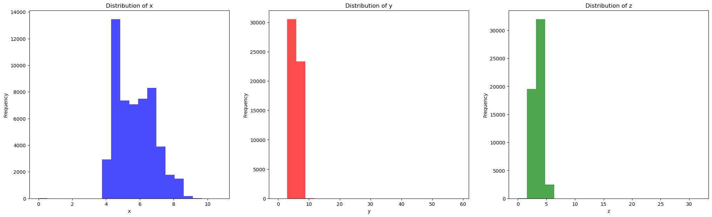
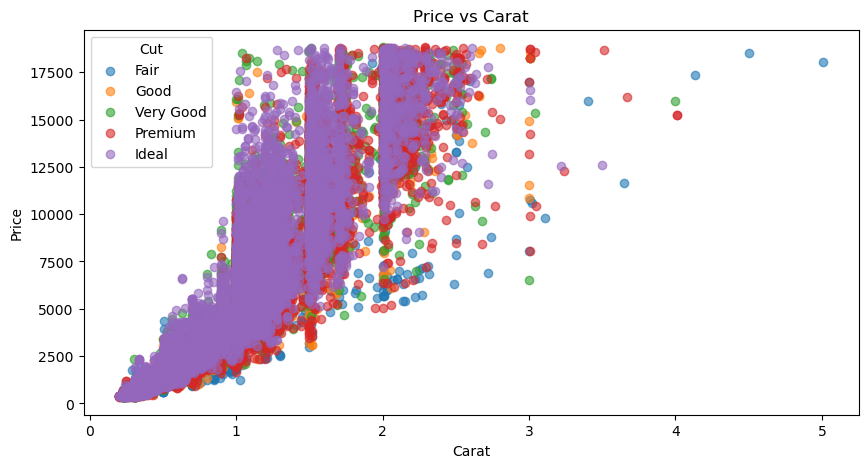
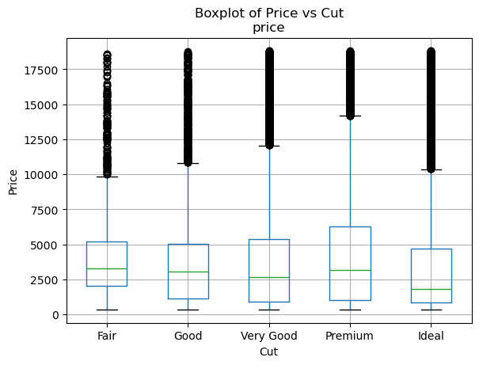
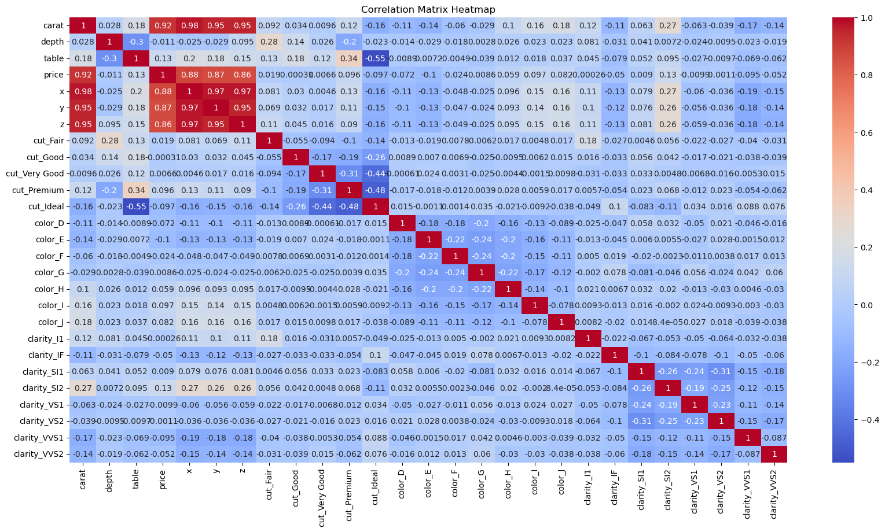
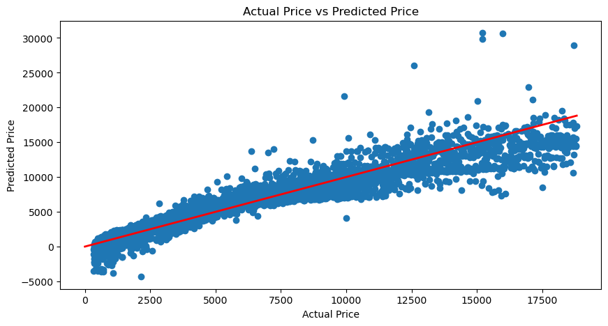

import pandas as pd # for data analysis, cleaning and exploration
import numpy as np # for numerical operations
import matplotlib.pyplot as plt # for data visualization
import seaborn as sns # for statiscal visualization
from sklearn.feature_selection import mutual_info_regression # for feature selection
from sklearn.model_selection import train_test_split # split train and test data
from sklearn.preprocessing import StandardScaler # normalize data
from sklearn.linear_model import LinearRegression # linear regression model
from sklearn.metrics import mean_squared_error, r2_score, mean_absolute_error # model evaluation
from sklearn.ensemble import RandomForestRegressor # random forest modelDiamond Price Prediction (Regression)
Dataset Link: https://www.kaggle.com/datasets/shivam2503/diamonds/data
Algorithms: Linear Regression, Random Forest
Load Dataset
# Load the data
data = pd.read_csv('diamonds.csv')
data| Unnamed: 0 | carat | cut | color | clarity | depth | table | price | x | y | z | |
|---|---|---|---|---|---|---|---|---|---|---|---|
| 0 | 1 | 0.23 | Ideal | E | SI2 | 61.5 | 55.0 | 326 | 3.95 | 3.98 | 2.43 |
| 1 | 2 | 0.21 | Premium | E | SI1 | 59.8 | 61.0 | 326 | 3.89 | 3.84 | 2.31 |
| 2 | 3 | 0.23 | Good | E | VS1 | 56.9 | 65.0 | 327 | 4.05 | 4.07 | 2.31 |
| 3 | 4 | 0.29 | Premium | I | VS2 | 62.4 | 58.0 | 334 | 4.20 | 4.23 | 2.63 |
| 4 | 5 | 0.31 | Good | J | SI2 | 63.3 | 58.0 | 335 | 4.34 | 4.35 | 2.75 |
| ... | ... | ... | ... | ... | ... | ... | ... | ... | ... | ... | ... |
| 53935 | 53936 | 0.72 | Ideal | D | SI1 | 60.8 | 57.0 | 2757 | 5.75 | 5.76 | 3.50 |
| 53936 | 53937 | 0.72 | Good | D | SI1 | 63.1 | 55.0 | 2757 | 5.69 | 5.75 | 3.61 |
| 53937 | 53938 | 0.70 | Very Good | D | SI1 | 62.8 | 60.0 | 2757 | 5.66 | 5.68 | 3.56 |
| 53938 | 53939 | 0.86 | Premium | H | SI2 | 61.0 | 58.0 | 2757 | 6.15 | 6.12 | 3.74 |
| 53939 | 53940 | 0.75 | Ideal | D | SI2 | 62.2 | 55.0 | 2757 | 5.83 | 5.87 | 3.64 |
53940 rows × 11 columns
Dataset Description:
price: price in US dollars ($326–$18,823)
carat: weight of the diamond (0.2–5.01)
cut: quality of the cut (Fair, Good, Very Good, Premium, Ideal)
color: diamond colour, from J (worst) to D (best)
clarity: a measurement of how clear the diamond is (I1 (worst), SI2, SI1, VS2, VS1, VVS2, VVS1, IF (best))
x: length in mm (0–10.74)
y: width in mm (0–58.9)
z: depth in mm (0–31.8)
depth: total depth percentage = z / mean(x, y) = 2 * z / (x + y) (43–79)
table: width of top of diamond relative to widest point (43–95)
# remove the first column
data = data.drop(data.columns[0], axis=1)# check for missing values
data.isnull().sum()carat 0
cut 0
color 0
clarity 0
depth 0
table 0
price 0
x 0
y 0
z 0
dtype: int64Exploratory Data Analysis (EDA)
# summary of the data
data.describe()| carat | depth | table | price | x | y | z | |
|---|---|---|---|---|---|---|---|
| count | 53940.000000 | 53940.000000 | 53940.000000 | 53940.000000 | 53940.000000 | 53940.000000 | 53940.000000 |
| mean | 0.797940 | 61.749405 | 57.457184 | 3932.799722 | 5.731157 | 5.734526 | 3.538734 |
| std | 0.474011 | 1.432621 | 2.234491 | 3989.439738 | 1.121761 | 1.142135 | 0.705699 |
| min | 0.200000 | 43.000000 | 43.000000 | 326.000000 | 0.000000 | 0.000000 | 0.000000 |
| 25% | 0.400000 | 61.000000 | 56.000000 | 950.000000 | 4.710000 | 4.720000 | 2.910000 |
| 50% | 0.700000 | 61.800000 | 57.000000 | 2401.000000 | 5.700000 | 5.710000 | 3.530000 |
| 75% | 1.040000 | 62.500000 | 59.000000 | 5324.250000 | 6.540000 | 6.540000 | 4.040000 |
| max | 5.010000 | 79.000000 | 95.000000 | 18823.000000 | 10.740000 | 58.900000 | 31.800000 |
# Distribution of x, y, z
plt.figure(figsize=(25, 7))
plt.subplot(1, 3, 1)
plt.hist(data['x'], bins=20, color='blue', alpha=0.7)
plt.xlabel('x')
plt.ylabel('Frequency')
plt.title('Distribution of x')
plt.subplot(1, 3, 2)
plt.hist(data['y'], bins=20, color='red', alpha=0.7)
plt.xlabel('y')
plt.ylabel('Frequency')
plt.title('Distribution of y')
plt.subplot(1, 3, 3)
plt.hist(data['z'], bins=20, color='green', alpha=0.7)
plt.xlabel('z')
plt.ylabel('Frequency')
plt.title('Distribution of z')
plt.show()
# find relationship between price and carat and cuts as legend
plt.figure(figsize=(10, 5))
cut_order = ['Fair', 'Good', 'Very Good', 'Premium', 'Ideal']
for cut in cut_order:
subset = data[data['cut'] == cut]
plt.scatter(subset['carat'], subset['price'], label=cut, alpha=0.6)
plt.xlabel('Carat')
plt.ylabel('Price')
plt.title('Price vs Carat')
plt.legend(title="Cut")
plt.show()
# Find distribution between price and cuts sort by fair, good, very good, premium, ideal
data['cut'] = pd.Categorical(data['cut'], categories=cut_order, ordered=True)
data.boxplot(column='price', by='cut')
plt.xlabel('Cut')
plt.ylabel('Price')
plt.suptitle('Boxplot of Price vs Cut')
plt.show()
Correlation Matrix
# turn categorical data into numerical data (one hot encoding)
data = pd.get_dummies(data)
data.head()| carat | depth | table | price | x | y | z | cut_Fair | cut_Good | cut_Very Good | ... | color_I | color_J | clarity_I1 | clarity_IF | clarity_SI1 | clarity_SI2 | clarity_VS1 | clarity_VS2 | clarity_VVS1 | clarity_VVS2 | |
|---|---|---|---|---|---|---|---|---|---|---|---|---|---|---|---|---|---|---|---|---|---|
| 0 | 0.23 | 61.5 | 55.0 | 326 | 3.95 | 3.98 | 2.43 | False | False | False | ... | False | False | False | False | False | True | False | False | False | False |
| 1 | 0.21 | 59.8 | 61.0 | 326 | 3.89 | 3.84 | 2.31 | False | False | False | ... | False | False | False | False | True | False | False | False | False | False |
| 2 | 0.23 | 56.9 | 65.0 | 327 | 4.05 | 4.07 | 2.31 | False | True | False | ... | False | False | False | False | False | False | True | False | False | False |
| 3 | 0.29 | 62.4 | 58.0 | 334 | 4.20 | 4.23 | 2.63 | False | False | False | ... | True | False | False | False | False | False | False | True | False | False |
| 4 | 0.31 | 63.3 | 58.0 | 335 | 4.34 | 4.35 | 2.75 | False | True | False | ... | False | True | False | False | False | True | False | False | False | False |
5 rows × 27 columns
# Correlation matrix heatmap
plt.figure(figsize=(20, 10))
sns.heatmap(data.corr(), cmap='coolwarm', annot=True)
plt.title('Correlation Matrix Heatmap')
plt.show()
The correlation matrix above shows that price is highly correlated with carat, x, y and z.
Feature Importance
Feature selection determines which features have the most influence on helping to determine the target.
Correlation refers to how close two variables in terms of having a linear relationship with each other.
X = data.drop('price', axis=1) #split features and target (price)
y = data['price']
mutual_info = mutual_info_regression(X, y)
# Create a series with the feature names as index
mi_series = pd.Series(mutual_info, index=X.columns)
mi_series.sort_values(ascending=False, inplace=True)
print(mi_series)carat 1.962734
y 1.492477
x 1.483015
z 1.432872
clarity_SI1 0.092427
clarity_VS2 0.087383
clarity_SI2 0.082170
color_E 0.076728
color_D 0.066383
color_G 0.063083
color_F 0.059474
table 0.053964
clarity_VVS2 0.053764
cut_Ideal 0.051747
clarity_VVS1 0.048700
color_H 0.047676
clarity_VS1 0.047232
cut_Premium 0.043793
depth 0.036750
clarity_IF 0.033731
color_I 0.033259
cut_Very Good 0.029169
color_J 0.023463
cut_Good 0.015622
cut_Fair 0.009292
clarity_I1 0.003396
dtype: float64Model Training
Linear Regression
X_train, X_test, y_train, y_test = train_test_split(X, y, test_size=0.2, random_state=42)
X_train.shape, X_test.shape, y_train.shape, y_test.shape((43152, 26), (10788, 26), (43152,), (10788,))# normalize the data
scaler = StandardScaler()
X_train_scaled = scaler.fit_transform(X_train)
X_test_scaled = scaler.transform(X_test)# Linear Regression
model = LinearRegression()
model.fit(X_train_scaled, y_train)
y_pred = model.predict(X_test_scaled)# Model Evaluation mse, rmse, r2, mae
mse = mean_squared_error(y_test, y_pred)
rmse = np.sqrt(mse)
r2 = r2_score(y_test, y_pred)
mae = mean_absolute_error(y_test, y_pred)
print(f'Mean Squared Error: {mse}')
print(f'Root Mean Squared Error: {rmse}')
print(f'R2 Score: {r2}')
print(f'Mean Absolute Error: {mae}')
Mean Squared Error: 1288705.477851674
Root Mean Squared Error: 1135.2116445190622
R2 Score: 0.9189331350419387
Mean Absolute Error: 737.1513665933271# plot the predicted price vs actual price with regression line
plt.figure(figsize=(10, 5))
plt.scatter(y_test, y_pred)
plt.plot([0, np.max(y_test)], [0, np.max(y_test)], color='red', linewidth=2)
plt.xlabel('Actual Price')
plt.ylabel('Predicted Price')
plt.title('Actual Price vs Predicted Price')
plt.show()
Random Forest
# model with 1000 trees
rf_model = RandomForestRegressor(n_estimators=1000, random_state=42)
# train model on training data
rf_model.fit(X_train, y_train)RandomForestRegressor(n_estimators=1000, random_state=42)In a Jupyter environment, please rerun this cell to show the HTML representation or trust the notebook.
On GitHub, the HTML representation is unable to render, please try loading this page with nbviewer.org.
RandomForestRegressor(n_estimators=1000, random_state=42)
# predict price on test data
y_pred_rf = rf_model.predict(X_test)
# Model Evaluation mse, rmse, r2, mae
mse_rf = mean_squared_error(y_test, y_pred_rf)
rmse_rf = np.sqrt(mse_rf)
r2_rf = r2_score(y_test, y_pred_rf)
mae_rf = mean_absolute_error(y_test, y_pred_rf)
print(f'Mean Squared Error: {mse_rf}')
print(f'Root Mean Squared Error: {rmse_rf}')
print(f'R2 Score: {r2_rf}')
print(f'Mean Absolute Error: {mae_rf}')Mean Squared Error: 300642.9310074715
Root Mean Squared Error: 548.3091564140358
R2 Score: 0.9810878588572404
Mean Absolute Error: 269.050603440588# Calculate accuracy
mape_rf = np.mean(np.abs((y_test - y_pred_rf) / y_test)) * 100
accuracy_rf = 100 - mape_rf
print(f'Accuracy: {accuracy_rf}')Accuracy: 93.54207416508297Comparison between Linear Regression and Random Forest
# show a table of mae, mse, rmse, r2 of linear regression and random forest
results = pd.DataFrame({
'Linear Regression': [mae, mse, rmse, r2],
'Random Forest': [mae_rf, mse_rf, rmse_rf, r2_rf]
}, index=['MAE', 'MSE', 'RMSE', 'R2'])
results| Linear Regression | Random Forest | |
|---|---|---|
| MAE | 7.371514e+02 | 269.050603 |
| MSE | 1.288705e+06 | 300642.931007 |
| RMSE | 1.135212e+03 | 548.309156 |
| R2 | 9.189331e-01 | 0.981088 |
Predict Price of diamond using Linear Regression
# given features, predict the price and show actual price
features = X_test.iloc[0]
actual_price = y_test.iloc[0]
predicted_price = model.predict([features])[0]
print(f'Actual Price: {actual_price}')
print(f'Predicted Price: {predicted_price}')Actual Price: 559
Predicted Price: -8071.667609278185Predict Price of diamond using Random Forest
# Given features, predict the price and show actual price also
predicted_price_rf = rf_model.predict([features])[0]
print(f'Actual Price: {actual_price}')
print(f'Predicted Price: {predicted_price_rf}')Actual Price: 559
Predicted Price: 566.594c:\Users\mch\anaconda3\Lib\site-packages\sklearn\base.py:493: UserWarning: X does not have valid feature names, but RandomForestRegressor was fitted with feature names
warnings.warn(Comparison between Actual and Predicted Price
# show the comaprison between the actual price and predicted price of two models in a table
comparison = pd.DataFrame({
'Actual Price': actual_price,
'Linear Regression (Prediction)': predicted_price,
'Random Forest (Prediction)': predicted_price_rf
}, index=['Diamond Price'])
comparison| Actual Price | Linear Regression (Prediction) | Random Forest (Prediction) | |
|---|---|---|---|
| Diamond Price | 559 | -8071.667609 | 566.594 |